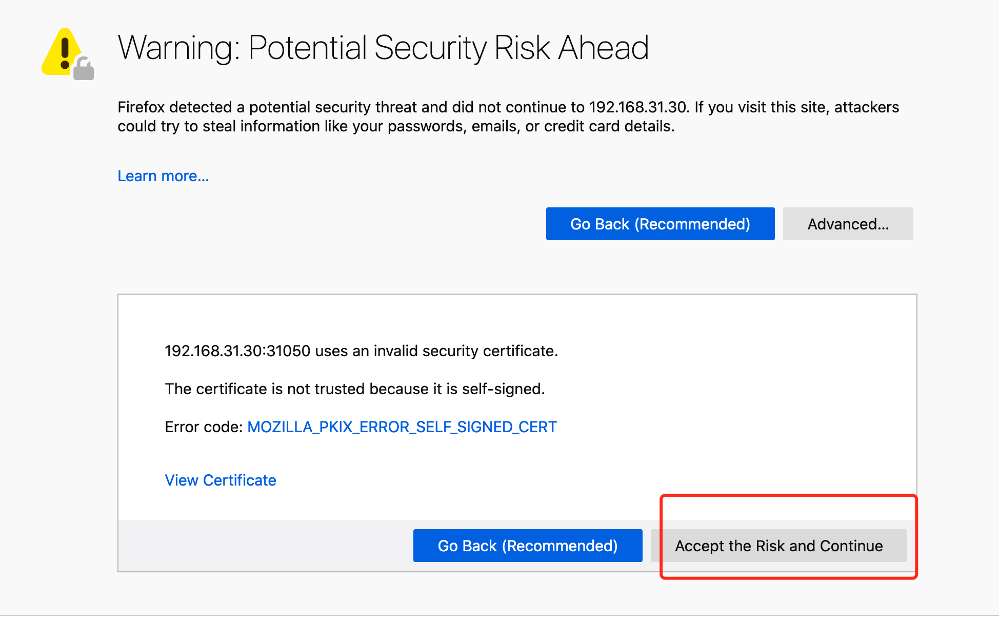
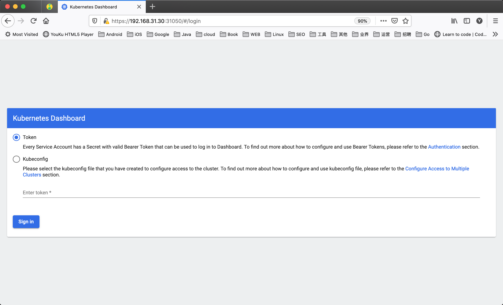

集群部署¶
使用 containerd 作为容器运行时搭建 Kubernetes 集群
现在我们使用 kubeadm 从头搭建一个使用 containerd 作为容器运行时的 Kubernetes 集群，这里我们安装最新的 v1.22.2 版本。
环境准备¶
3个节点，都是 Centos 7.6 系统，内核版本：3.10.0-1062.4.1.el7.x86_64，在每个节点上添加 hosts 信息：
hostname
节点的 hostname 必须使用标准的 DNS 命名，另外千万不用什么默认的 localhost 的 hostname，会导致各种错误出现的。在 Kubernetes 项目里，机器的名字以及一切存储在 Etcd 中的 API 对象，都必须使用标准的 DNS 命名（RFC 1123）。可以使用命令 hostnamectl set-hostname node1 来修改 hostname。
禁用防火墙：
禁用 SELINUX：
由于开启内核 ipv4 转发需要加载 br_netfilter 模块，所以加载下该模块：
创建/etc/sysctl.d/k8s.conf文件，添加如下内容：
net.bridge.bridge-nf-call-ip6tables = 1
net.bridge.bridge-nf-call-iptables = 1
net.ipv4.ip_forward = 1
bridge-nf
bridge-nf 使得 netfilter 可以对 Linux 网桥上的 IPv4/ARP/IPv6 包过滤。比如，设置net.bridge.bridge-nf-call-iptables＝1后，二层的网桥在转发包时也会被 iptables的 FORWARD 规则所过滤。常用的选项包括：
- net.bridge.bridge-nf-call-arptables：是否在 arptables 的 FORWARD 中过滤网桥的 ARP 包
- net.bridge.bridge-nf-call-ip6tables：是否在 ip6tables 链中过滤 IPv6 包
- net.bridge.bridge-nf-call-iptables：是否在 iptables 链中过滤 IPv4 包
- net.bridge.bridge-nf-filter-vlan-tagged：是否在 iptables/arptables 中过滤打了 vlan 标签的包。
执行如下命令使修改生效：
安装 ipvs：
➜ ~ cat > /etc/sysconfig/modules/ipvs.modules <<EOF
#!/bin/bash
modprobe -- ip_vs
modprobe -- ip_vs_rr
modprobe -- ip_vs_wrr
modprobe -- ip_vs_sh
modprobe -- nf_conntrack_ipv4
EOF
➜ ~ chmod 755 /etc/sysconfig/modules/ipvs.modules && bash /etc/sysconfig/modules/ipvs.modules && lsmod | grep -e ip_vs -e nf_conntrack_ipv4
/etc/sysconfig/modules/ipvs.modules文件，保证在节点重启后能自动加载所需模块。使用lsmod | grep -e ip_vs -e nf_conntrack_ipv4命令查看是否已经正确加载所需的内核模块。
接下来还需要确保各个节点上已经安装了 ipset 软件包：
为了便于查看 ipvs 的代理规则，最好安装一下管理工具 ipvsadm：
同步服务器时间
➜ ~ yum install chrony -y
➜ ~ systemctl enable chronyd
➜ ~ systemctl start chronyd
➜ ~ chronyc sources
210 Number of sources = 4
MS Name/IP address Stratum Poll Reach LastRx Last sample
===============================================================================
^+ sv1.ggsrv.de 2 6 17 32 -823us[-1128us] +/- 98ms
^- montreal.ca.logiplex.net 2 6 17 32 -17ms[ -17ms] +/- 179ms
^- ntp6.flashdance.cx 2 6 17 32 -32ms[ -32ms] +/- 161ms
^* 119.28.183.184 2 6 33 32 +661us[ +357us] +/- 38ms
➜ ~ date
Tue Aug 31 14:36:14 CST 2021
/etc/fstab文件，注释掉 SWAP 的自动挂载，使用free -m确认 swap 已经关闭。swappiness 参数调整，修改/etc/sysctl.d/k8s.conf添加下面一行：
执行 sysctl -p /etc/sysctl.d/k8s.conf 使修改生效。
安装 Containerd¶
我们已经了解过容器运行时 containerd 的一些基本使用，接下来在各个节点上安装 Containerd。
由于 containerd 需要调用 runc，所以我们也需要先安装 runc，不过 containerd 提供了一个包含相关依赖的压缩包 cri-containerd-cni-${VERSION}.${OS}-${ARCH}.tar.gz，可以直接使用这个包来进行安装。首先从 release 页面下载最新版本的压缩包，当前为 1.5.5 版本：
➜ ~ wget https://github.com/containerd/containerd/releases/download/v1.5.5/cri-containerd-cni-1.5.5-linux-amd64.tar.gz
# 如果有限制，也可以替换成下面的 URL 加速下载
# wget https://download.fastgit.org/containerd/containerd/releases/download/v1.5.5/cri-containerd-cni-1.5.5-linux-amd64.tar.gz
/usr/local/bin 和 /usr/local/sbin 追加到 ~/.bashrc 文件的 PATH 环境变量中：
然后执行下面的命令使其立即生效：
containerd 的默认配置文件为 /etc/containerd/config.toml，我们可以通过如下所示的命令生成一个默认的配置：
对于使用 systemd 作为 init system 的 Linux 的发行版，使用 systemd 作为容器的 cgroup driver 可以确保节点在资源紧张的情况更加稳定，所以推荐将 containerd 的 cgroup driver 配置为 systemd。
修改前面生成的配置文件 /etc/containerd/config.toml，在 plugins."io.containerd.grpc.v1.cri".containerd.runtimes.runc.options 配置块下面将 SystemdCgroup 设置为 true：
[plugins."io.containerd.grpc.v1.cri".containerd.runtimes.runc]
...
[plugins."io.containerd.grpc.v1.cri".containerd.runtimes.runc.options]
SystemdCgroup = true
....
registry 配置块下面进行配置 registry.mirrors：
[plugins."io.containerd.grpc.v1.cri"]
...
# sandbox_image = "k8s.gcr.io/pause:3.5"
sandbox_image = "registry.aliyuncs.com/k8sxio/pause:3.5"
...
[plugins."io.containerd.grpc.v1.cri".registry]
[plugins."io.containerd.grpc.v1.cri".registry.mirrors]
[plugins."io.containerd.grpc.v1.cri".registry.mirrors."docker.io"]
endpoint = ["https://bqr1dr1n.mirror.aliyuncs.com"]
[plugins."io.containerd.grpc.v1.cri".registry.mirrors."k8s.gcr.io"]
endpoint = ["https://registry.aliyuncs.com/k8sxio"]
Warning
如果我们的节点不能正常获取 k8s.gcr.io 的镜像，那么我们需要在上面重新配置 sandbox_image 镜像，否则后面 kubelet 覆盖该镜像不会生效：Warning: For remote container runtime, --pod-infra-container-image is ignored in kubelet, which should be set in that remote runtime instead。
由于上面我们下载的 containerd 压缩包中包含一个 etc/systemd/system/containerd.service 的文件，这样我们就可以通过 systemd 来配置 containerd 作为守护进程运行了，现在我们就可以启动 containerd 了，直接执行下面的命令即可：
ctr 和 crictl 了，比如查看版本：
➜ ~ ctr version
Client:
Version: v1.5.5
Revision: 72cec4be58a9eb6b2910f5d10f1c01ca47d231c0
Go version: go1.16.6
Server:
Version: v1.5.5
Revision: 72cec4be58a9eb6b2910f5d10f1c01ca47d231c0
UUID: cd2894ad-fd71-4ef7-a09f-5795c7eb4c3b
➜ ~ crictl version
Version: 0.1.0
RuntimeName: containerd
RuntimeVersion: v1.5.5
RuntimeApiVersion: v1alpha2
使用 kubeadm 部署 Kubernetes¶
上面的相关环境配置也完成了，现在我们就可以来安装 Kubeadm 了，我们这里是通过指定yum 源的方式来进行安装的：
➜ ~ cat <<EOF > /etc/yum.repos.d/kubernetes.repo
[kubernetes]
name=Kubernetes
baseurl=https://packages.cloud.google.com/yum/repos/kubernetes-el7-x86_64
enabled=1
gpgcheck=1
repo_gpgcheck=1
gpgkey=https://packages.cloud.google.com/yum/doc/yum-key.gpg
https://packages.cloud.google.com/yum/doc/rpm-package-key.gpg
EOF
➜ ~ cat <<EOF > /etc/yum.repos.d/kubernetes.repo
[kubernetes]
name=Kubernetes
baseurl=http://mirrors.aliyun.com/kubernetes/yum/repos/kubernetes-el7-x86_64
enabled=1
gpgcheck=0
repo_gpgcheck=0
gpgkey=http://mirrors.aliyun.com/kubernetes/yum/doc/yum-key.gpg
http://mirrors.aliyun.com/kubernetes/yum/doc/rpm-package-key.gpg
EOF
# --disableexcludes 禁掉除了kubernetes之外的别的仓库
➜ ~ yum makecache fast
➜ ~ yum install -y kubelet-1.22.2 kubeadm-1.22.2 kubectl-1.22.2 --disableexcludes=kubernetes
➜ ~ kubeadm version
kubeadm version: &version.Info{Major:"1", Minor:"22", GitVersion:"v1.22.2", GitCommit:"8b5a19147530eaac9476b0ab82980b4088bbc1b2", GitTreeState:"clean", BuildDate:"2021-09-15T21:37:34Z", GoVersion:"go1.16.8", Compiler:"gc", Platform:"linux/amd64"}
v1.22.2 版本，然后将 master 节点的 kubelet 设置成开机启动：
Success
到这里为止上面所有的操作都需要在所有节点执行配置。
初始化集群¶
当我们执行 kubelet --help 命令的时候可以看到原来大部分命令行参数都被 DEPRECATED了，这是因为官方推荐我们使用 --config 来指定配置文件，在配置文件中指定原来这些参数的配置，可以通过官方文档 Set Kubelet parameters via a config file 了解更多相关信息，这样 Kubernetes 就可以支持动态 Kubelet 配置（Dynamic Kubelet Configuration）了，参考 Reconfigure a Node’s Kubelet in a Live Cluster。
然后我们可以通过下面的命令在 master 节点上输出集群初始化默认使用的配置：
然后根据我们自己的需求修改配置，比如修改imageRepository 指定集群初始化时拉取 Kubernetes 所需镜像的地址，kube-proxy 的模式为 ipvs，另外需要注意的是我们这里是准备安装 flannel 网络插件的，需要将 networking.podSubnet 设置为10.244.0.0/16：
# kubeadm.yaml
apiVersion: kubeadm.k8s.io/v1beta3
bootstrapTokens:
- groups:
- system:bootstrappers:kubeadm:default-node-token
token: abcdef.0123456789abcdef
ttl: 24h0m0s
usages:
- signing
- authentication
kind: InitConfiguration
localAPIEndpoint:
advertiseAddress: 192.168.0.186 # 指定master节点内网IP
bindPort: 6443
nodeRegistration:
criSocket: /run/containerd/containerd.sock # 使用 containerd的Unix socket 地址
imagePullPolicy: IfNotPresent
name: master
taints: # 给master添加污点，master节点不能调度应用
- effect: "NoSchedule"
key: "node-role.kubernetes.io/master"
---
apiVersion: kubeproxy.config.k8s.io/v1alpha1
kind: KubeProxyConfiguration
mode: ipvs # kube-proxy 模式
---
apiServer:
timeoutForControlPlane: 4m0s
apiVersion: kubeadm.k8s.io/v1beta3
certificatesDir: /etc/kubernetes/pki
clusterName: kubernetes
controllerManager: {}
dns: {}
etcd:
local:
dataDir: /var/lib/etcd
imageRepository: registry.aliyuncs.com/k8sxio
kind: ClusterConfiguration
kubernetesVersion: 1.22.2
networking:
dnsDomain: cluster.local
serviceSubnet: 10.96.0.0/12
podSubnet: 10.244.0.0/16 # 指定 pod 子网
scheduler: {}
---
apiVersion: kubelet.config.k8s.io/v1beta1
authentication:
anonymous:
enabled: false
webhook:
cacheTTL: 0s
enabled: true
x509:
clientCAFile: /etc/kubernetes/pki/ca.crt
authorization:
mode: Webhook
webhook:
cacheAuthorizedTTL: 0s
cacheUnauthorizedTTL: 0s
clusterDNS:
- 10.96.0.10
clusterDomain: cluster.local
cpuManagerReconcilePeriod: 0s
evictionPressureTransitionPeriod: 0s
fileCheckFrequency: 0s
healthzBindAddress: 127.0.0.1
healthzPort: 10248
httpCheckFrequency: 0s
imageMinimumGCAge: 0s
kind: KubeletConfiguration
cgroupDriver: systemd # 配置 cgroup driver
logging: {}
memorySwap: {}
nodeStatusReportFrequency: 0s
nodeStatusUpdateFrequency: 0s
rotateCertificates: true
runtimeRequestTimeout: 0s
shutdownGracePeriod: 0s
shutdownGracePeriodCriticalPods: 0s
staticPodPath: /etc/kubernetes/manifests
streamingConnectionIdleTimeout: 0s
syncFrequency: 0s
volumeStatsAggPeriod: 0s
配置提示
对于上面的资源清单的文档比较杂，要想完整了解上面的资源对象对应的属性，可以查看对应的 godoc 文档，地址: https://godoc.org/k8s.io/kubernetes/cmd/kubeadm/app/apis/kubeadm/v1beta3。
在开始初始化集群之前可以使用 kubeadm config images pull --config kubeadm.yaml 预先在各个服务器节点上拉取所k8s需要的容器镜像。
配置文件准备好过后，可以使用如下命令先将相关镜像 pull 下面：
➜ ~ kubeadm config images pull --config kubeadm.yaml
[config/images] Pulled registry.aliyuncs.com/k8sxio/kube-apiserver:v1.22.2
[config/images] Pulled registry.aliyuncs.com/k8sxio/kube-controller-manager:v1.22.2
[config/images] Pulled registry.aliyuncs.com/k8sxio/kube-scheduler:v1.22.2
[config/images] Pulled registry.aliyuncs.com/k8sxio/kube-proxy:v1.22.2
[config/images] Pulled registry.aliyuncs.com/k8sxio/pause:3.5
[config/images] Pulled registry.aliyuncs.com/k8sxio/etcd:3.5.0-0
failed to pull image "registry.aliyuncs.com/k8sxio/coredns:v1.8.4": output: time="2021-10-25T17:34:48+08:00" level=fatal msg="pulling image: rpc error: code = NotFound desc = failed to pull and unpack image \"registry.aliyuncs.com/k8sxio/coredns:v1.8.4\": failed to resolve reference \"registry.aliyuncs.com/k8sxio/coredns:v1.8.4\": registry.aliyuncs.com/k8sxio/coredns:v1.8.4: not found"
, error: exit status 1
To see the stack trace of this error execute with --v=5 or higher
coredns 镜像的时候出错了，没有找到这个镜像，我们可以手动 pull 该镜像，然后重新 tag 下镜像地址即可：
➜ ~ ctr -n k8s.io i pull docker.io/coredns/coredns:1.8.4
docker.io/coredns/coredns:1.8.4: resolved |++++++++++++++++++++++++++++++++++++++|
index-sha256:6e5a02c21641597998b4be7cb5eb1e7b02c0d8d23cce4dd09f4682d463798890: done |++++++++++++++++++++++++++++++++++++++|
manifest-sha256:10683d82b024a58cc248c468c2632f9d1b260500f7cd9bb8e73f751048d7d6d4: done |++++++++++++++++++++++++++++++++++++++|
layer-sha256:bc38a22c706b427217bcbd1a7ac7c8873e75efdd0e59d6b9f069b4b243db4b4b: done |++++++++++++++++++++++++++++++++++++++|
config-sha256:8d147537fb7d1ac8895da4d55a5e53621949981e2e6460976dae812f83d84a44: done |++++++++++++++++++++++++++++++++++++++|
layer-sha256:c6568d217a0023041ef9f729e8836b19f863bcdb612bb3a329ebc165539f5a80: exists |++++++++++++++++++++++++++++++++++++++|
elapsed: 12.4s total: 12.0 M (991.3 KiB/s)
unpacking linux/amd64 sha256:6e5a02c21641597998b4be7cb5eb1e7b02c0d8d23cce4dd09f4682d463798890...
done: 410.185888ms
➜ ~ ctr -n k8s.io i tag docker.io/coredns/coredns:1.8.4 registry.aliyuncs.com/k8sxio/coredns:v1.8.4
➜ ~ kubeadm init --config kubeadm.yaml --v=5
[init] Using Kubernetes version: v1.22.2
[preflight] Running pre-flight checks
[preflight] Pulling images required for setting up a Kubernetes cluster
[preflight] This might take a minute or two, depending on the speed of your internet connection
[preflight] You can also perform this action in beforehand using 'kubeadm config images pull'
[certs] Using certificateDir folder "/etc/kubernetes/pki"
[certs] Generating "ca" certificate and key
[certs] Generating "apiserver" certificate and key
[certs] apiserver serving cert is signed for DNS names [kubernetes kubernetes.default kubernetes.default.svc kubernetes.default.svc.cluster.local master1] and IPs [10.96.0.1 192.168.31.31]
[certs] Generating "apiserver-kubelet-client" certificate and key
[certs] Generating "front-proxy-ca" certificate and key
[certs] Generating "front-proxy-client" certificate and key
[certs] Generating "etcd/ca" certificate and key
[certs] Generating "etcd/server" certificate and key
[certs] etcd/server serving cert is signed for DNS names [localhost master1] and IPs [192.168.31.31 127.0.0.1 ::1]
[certs] Generating "etcd/peer" certificate and key
[certs] etcd/peer serving cert is signed for DNS names [localhost master1] and IPs [192.168.31.31 127.0.0.1 ::1]
[certs] Generating "etcd/healthcheck-client" certificate and key
[certs] Generating "apiserver-etcd-client" certificate and key
[certs] Generating "sa" key and public key
[kubeconfig] Using kubeconfig folder "/etc/kubernetes"
[kubeconfig] Writing "admin.conf" kubeconfig file
[kubeconfig] Writing "kubelet.conf" kubeconfig file
[kubeconfig] Writing "controller-manager.conf" kubeconfig file
[kubeconfig] Writing "scheduler.conf" kubeconfig file
[kubelet-start] Writing kubelet environment file with flags to file "/var/lib/kubelet/kubeadm-flags.env"
[kubelet-start] Writing kubelet configuration to file "/var/lib/kubelet/config.yaml"
[kubelet-start] Starting the kubelet
[control-plane] Using manifest folder "/etc/kubernetes/manifests"
[control-plane] Creating static Pod manifest for "kube-apiserver"
[control-plane] Creating static Pod manifest for "kube-controller-manager"
[control-plane] Creating static Pod manifest for "kube-scheduler"
[etcd] Creating static Pod manifest for local etcd in "/etc/kubernetes/manifests"
[wait-control-plane] Waiting for the kubelet to boot up the control plane as static Pods from directory "/etc/kubernetes/manifests". This can take up to 4m0s
[apiclient] All control plane components are healthy after 12.004224 seconds
[upload-config] Storing the configuration used in ConfigMap "kubeadm-config" in the "kube-system" Namespace
[kubelet] Creating a ConfigMap "kubelet-config-1.22" in namespace kube-system with the configuration for the kubelets in the cluster
[upload-certs] Skipping phase. Please see --upload-certs
[mark-control-plane] Marking the node master1 as control-plane by adding the labels: [node-role.kubernetes.io/master(deprecated) node-role.kubernetes.io/control-plane node.kubernetes.io/exclude-from-external-load-balancers]
[mark-control-plane] Marking the node master1 as control-plane by adding the taints [node-role.kubernetes.io/master:NoSchedule]
[bootstrap-token] Using token: abcdef.0123456789abcdef
[bootstrap-token] Configuring bootstrap tokens, cluster-info ConfigMap, RBAC Roles
[bootstrap-token] configured RBAC rules to allow Node Bootstrap tokens to get nodes
[bootstrap-token] configured RBAC rules to allow Node Bootstrap tokens to post CSRs in order for nodes to get long term certificate credentials
[bootstrap-token] configured RBAC rules to allow the csrapprover controller automatically approve CSRs from a Node Bootstrap Token
[bootstrap-token] configured RBAC rules to allow certificate rotation for all node client certificates in the cluster
[bootstrap-token] Creating the "cluster-info" ConfigMap in the "kube-public" namespace
[kubelet-finalize] Updating "/etc/kubernetes/kubelet.conf" to point to a rotatable kubelet client certificate and key
[addons] Applied essential addon: CoreDNS
[addons] Applied essential addon: kube-proxy
Your Kubernetes control-plane has initialized successfully!
To start using your cluster, you need to run the following as a regular user:
mkdir -p $HOME/.kube
sudo cp -i /etc/kubernetes/admin.conf $HOME/.kube/config
sudo chown $(id -u):$(id -g) $HOME/.kube/config
Alternatively, if you are the root user, you can run:
export KUBECONFIG=/etc/kubernetes/admin.conf
You should now deploy a pod network to the cluster.
Run "kubectl apply -f [podnetwork].yaml" with one of the options listed at:
https://kubernetes.io/docs/concepts/cluster-administration/addons/
Then you can join any number of worker nodes by running the following on each as root:
kubeadm join 192.168.0.186:6443 --token abcdef.0123456789abcdef \
--discovery-token-ca-cert-hash sha256:ca0c87226c69309d7779096c15b6a41e14b077baf4650bfdb6f9d3178d4da645
➜ ~ mkdir -p $HOME/.kube
➜ ~ sudo cp -i /etc/kubernetes/admin.conf $HOME/.kube/config
➜ ~ sudo chown $(id -u):$(id -g) $HOME/.kube/config
添加节点¶
记住初始化集群上面的配置和操作要提前做好，将 master 节点上面的 $HOME/.kube/config 文件拷贝到 node 节点对应的文件中，安装 kubeadm、kubelet、kubectl（可选），然后执行上面初始化完成后提示的 join 命令即可：
➜ ~ kubeadm join 192.168.31.31:6443 --token abcdef.0123456789abcdef \
> --discovery-token-ca-cert-hash sha256:ca0c87226c69309d7779096c15b6a41e14b077baf4650bfdb6f9d3178d4da645
[preflight] Running pre-flight checks
[preflight] Reading configuration from the cluster...
[preflight] FYI: You can look at this config file with 'kubectl -n kube-system get cm kubeadm-config -o yaml'
[kubelet-start] Writing kubelet configuration to file "/var/lib/kubelet/config.yaml"
[kubelet-start] Writing kubelet environment file with flags to file "/var/lib/kubelet/kubeadm-flags.env"
[kubelet-start] Starting the kubelet
[kubelet-start] Waiting for the kubelet to perform the TLS Bootstrap...
This node has joined the cluster:
* Certificate signing request was sent to apiserver and a response was received.
* The Kubelet was informed of the new secure connection details.
Run 'kubectl get nodes' on the control-plane to see this node join the cluster.
join 命令
如果忘记了上面的 join 命令可以使用命令 kubeadm token create --print-join-command 重新获取。
执行成功后运行 get nodes 命令：
➜ ~ kubectl get nodes
NAME STATUS ROLES AGE VERSION
k8sm Ready control-plane,master 2m35s v1.22.2
k8sn1 Ready <none> 45s v1.22.2
➜ ~ wget https://raw.githubusercontent.com/coreos/flannel/master/Documentation/kube-flannel.yml
# 如果有节点是多网卡，则需要在资源清单文件中指定内网网卡
# 搜索到名为 kube-flannel-ds 的 DaemonSet，在kube-flannel容器下面
➜ ~ vi kube-flannel.yml
......
containers:
- name: kube-flannel
image: quay.io/coreos/flannel:v0.15.0
command:
- /opt/bin/flanneld
args:
- --ip-masq
- --kube-subnet-mgr
- --iface=eth0 # 如果是多网卡的话，指定内网网卡的名称
......
➜ ~ kubectl apply -f kube-flannel.yml # 安装 flannel 网络插件
➜ ~ kubectl get pods -n kube-system
NAME READY STATUS RESTARTS AGE
coredns-7568f67dbd-5mg59 1/1 Running 0 8m32s
coredns-7568f67dbd-b685t 1/1 Running 0 8m31s
etcd-master 1/1 Running 0 66m
kube-apiserver-master 1/1 Running 0 66m
kube-controller-manager-master 1/1 Running 0 66m
kube-flannel-ds-dsbt6 1/1 Running 0 11m
kube-flannel-ds-zwlm6 1/1 Running 0 11m
kube-proxy-jq84n 1/1 Running 0 66m
kube-proxy-x4hbv 1/1 Running 0 19m
kube-scheduler-master 1/1 Running 0 66m
Flannel 网络插件
当我们部署完网络插件后执行 ifconfig 命令，正常会看到新增的cni0与flannel1这两个虚拟设备，但是如果没有看到cni0这个设备也不用太担心，我们可以观察/var/lib/cni目录是否存在，如果不存在并不是说部署有问题，而是该节点上暂时还没有应用运行，我们只需要在该节点上运行一个 Pod 就可以看到该目录会被创建，并且cni0设备也会被创建出来。
用同样的方法添加另外一个节点即可。
Dashboard¶
v1.22.2 版本的集群需要安装最新的 2.0+ 版本的 Dashboard：
# 推荐使用下面这种方式
➜ ~ wget https://raw.githubusercontent.com/kubernetes/dashboard/v2.3.1/aio/deploy/recommended.yaml
➜ ~ vi recommended.yaml
# 修改Service为NodePort类型
......
kind: Service
apiVersion: v1
metadata:
labels:
k8s-app: kubernetes-dashboard
name: kubernetes-dashboard
namespace: kubernetes-dashboard
spec:
ports:
- port: 443
targetPort: 8443
selector:
k8s-app: kubernetes-dashboard
type: NodePort # 加上type=NodePort变成NodePort类型的服务
......
监控组件
在 YAML 文件中可以看到新版本 Dashboard 集成了一个 metrics-scraper 的组件，可以通过 Kubernetes 的 Metrics API 收集一些基础资源的监控信息，并在 web 页面上展示，所以要想在页面上展示监控信息就需要提供 Metrics API，比如安装 Metrics Server。
直接创建：
新版本的 Dashboard 会被默认安装在 kubernetes-dashboard 这个命名空间下面：➜ ~ kubectl get pods -n kubernetes-dashboard -o wide
NAME READY STATUS RESTARTS AGE IP NODE NOMINATED NODE READINESS GATES
dashboard-metrics-scraper-856586f554-pllvt 1/1 Running 0 24m 10.88.0.7 k8sm <none> <none>
kubernetes-dashboard-76597d7df5-82998 1/1 Running 0 21m 10.88.0.2 k8sn2 <none> <none>
10.88.xx.xx，包括前面自动安装的 CoreDNS 也是如此，我们前面不是配置的 podSubnet 为 10.244.0.0/16 吗？我们先去查看下 CNI 的配置文件：
➜ ~ ls -la /etc/cni/net.d/
total 8
drwxr-xr-x 2 1001 docker 67 Aug 31 16:45 .
drwxr-xr-x. 3 1001 docker 19 Jul 30 01:13 ..
-rw-r--r-- 1 1001 docker 604 Jul 30 01:13 10-containerd-net.conflist
-rw-r--r-- 1 root root 292 Aug 31 16:45 10-flannel.conflist
10-containerd-net.conflist，另外一个是我们上面创建的 Flannel 网络插件生成的配置，我们的需求肯定是想使用 Flannel 的这个配置，我们可以查看下 containerd 这个自带的 cni 插件配置：
➜ ~ cat /etc/cni/net.d/10-containerd-net.conflist
{
"cniVersion": "0.4.0",
"name": "containerd-net",
"plugins": [
{
"type": "bridge",
"bridge": "cni0",
"isGateway": true,
"ipMasq": true,
"promiscMode": true,
"ipam": {
"type": "host-local",
"ranges": [
[{
"subnet": "10.88.0.0/16"
}],
[{
"subnet": "2001:4860:4860::/64"
}]
],
"routes": [
{ "dst": "0.0.0.0/0" },
{ "dst": "::/0" }
]
}
},
{
"type": "portmap",
"capabilities": {"portMappings": true}
}
]
}
10.88.0.0/16，但是这个 cni 插件类型是 bridge 网络，网桥的名称为 cni0：
➜ ~ ip a
...
6: cni0: <BROADCAST,MULTICAST,PROMISC,UP,LOWER_UP> mtu 1500 qdisc noqueue state UP group default qlen 1000
link/ether 9a:e7:eb:40:e8:66 brd ff:ff:ff:ff:ff:ff
inet 10.88.0.1/16 brd 10.88.255.255 scope global cni0
valid_lft forever preferred_lft forever
inet6 2001:4860:4860::1/64 scope global
valid_lft forever preferred_lft forever
inet6 fe80::98e7:ebff:fe40:e866/64 scope link
valid_lft forever preferred_lft forever
...
10-containerd-net.conflist 这个配置删除，因为如果这个目录中有多个 cni 配置文件，kubelet 将会使用按文件名的字典顺序排列的第一个作为配置文件，所以前面默认选择使用的是 containerd-net 这个插件。
➜ ~ mv /etc/cni/net.d/10-containerd-net.conflist /etc/cni/net.d/10-containerd-net.conflist.bak
➜ ~ ifconfig cni0 down && ip link delete cni0
➜ ~ systemctl daemon-reload
➜ ~ systemctl restart containerd kubelet
➜ ~ kubectl get pods -n kubernetes-dashboard -o wide
NAME READY STATUS RESTARTS AGE IP NODE NOMINATED NODE READINESS GATES
dashboard-metrics-scraper-856586f554-tp8m5 1/1 Running 0 42s 10.244.1.6 k8sn2 <none> <none>
kubernetes-dashboard-76597d7df5-9rmbx 1/1 Running 0 66s 10.244.1.5 k8sn2 <none> <none>
➜ ~ kubectl get pods -n kube-system -o wide -l k8s-app=kube-dns
NAME READY STATUS RESTARTS AGE IP NODE NOMINATED NODE READINESS GATES
coredns-7568f67dbd-n7bfx 1/1 Running 0 5m40s 10.244.1.2 k8sn2 <none> <none>
coredns-7568f67dbd-plrv8 1/1 Running 0 3m47s 10.244.1.4 k8sn2 <none> <none>
➜ ~ kubectl get svc -n kubernetes-dashboard
NAME TYPE CLUSTER-IP EXTERNAL-IP PORT(S) AGE
dashboard-metrics-scraper ClusterIP 10.99.37.172 <none> 8000/TCP 25m
kubernetes-dashboard NodePort 10.103.102.27 <none> 443:31050/TCP 25m
Firefox 下面打不开页面，可以点击下页面中的信任证书即可：

信任后就可以访问到 Dashboard 的登录页面了：

然后创建一个具有全局所有权限的用户来登录 Dashboard：(admin.yaml)
kind: ClusterRoleBinding
apiVersion: rbac.authorization.k8s.io/v1
metadata:
name: admin
roleRef:
kind: ClusterRole
name: cluster-admin
apiGroup: rbac.authorization.k8s.io
subjects:
- kind: ServiceAccount
name: admin
namespace: kubernetes-dashboard
---
apiVersion: v1
kind: ServiceAccount
metadata:
name: admin
namespace: kubernetes-dashboard
➜ ~ kubectl apply -f admin.yaml
➜ ~ kubectl get secret -n kubernetes-dashboard|grep admin-token
admin-token-lwmmx kubernetes.io/service-account-token 3 1d
➜ ~ kubectl get secret admin-token-lwmmx -o jsonpath={.data.token} -n kubernetes-dashboard |base64 -d
# 会生成一串很长的base64后的字符串
最终, 我们就完成了使用 kubeadm 搭建 v1.22.2 版本的 kubernetes 集群、coredns、ipvs、flannel、containerd。
清理¶
如果你的集群安装过程中遇到了其他问题，我们可以使用下面的命令来进行重置：